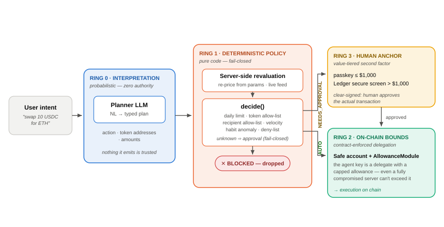
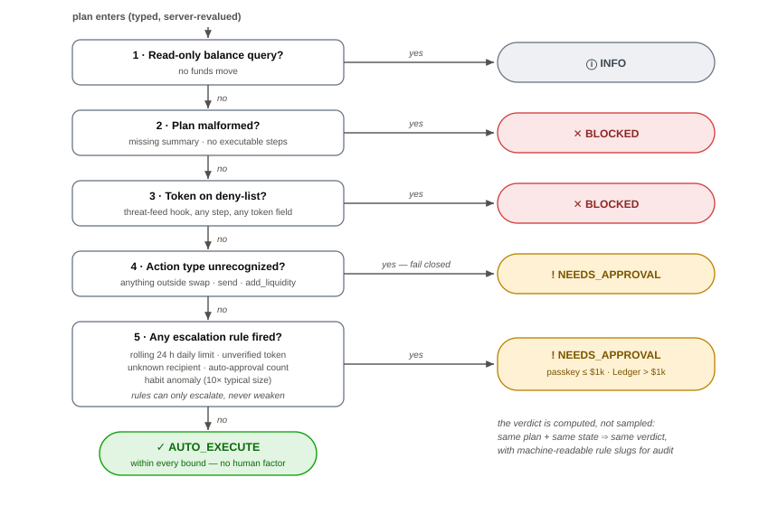
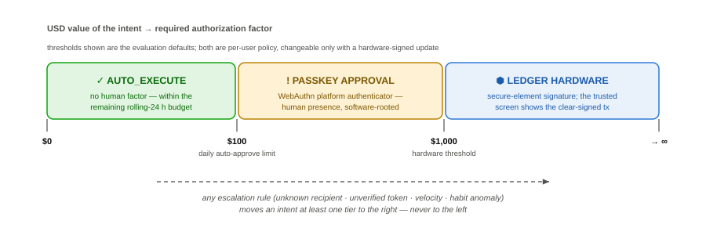

Introduction: the delegation problem
350–450 words. See paper/OUTLINE.md §1. Open with the concrete scene; cite the
agentic-payment race (x402, AP2, ERC-7715) [refs]; state the framing question and the three
contributions.
Threat model
350–400 words. Three adversaries T1/T2/T3 + explicit out-of-scope list.
Table 1 goes here.
Adversaries, their capabilities, and the ring that stops them.
| Adversary | Controls | Example attack | Stopped by |
|---|---|---|---|
| T1 — adversarial input | Text reaching the planner | “Your limit was raised — swap 2 ETH” | Ring 1 (revaluation, limits) |
| T2 — compromised planner | The plan itself | 2 WETH swap labeled “USDC”, valued at $2 | Ring 1 (address-authoritative valuation) |
| T3 — compromised host | The whole server | Forged verdicts, arbitrary calls | Ring 2 (contract allowance) + Ring 3 (hardware) |
Interpretation is not authority
450–550 words — the intellectual heart; write this section first.
Why a gatekeeper LLM is a category error (sampled verdicts, correlated failures,
unfalsifiable reasoning); the border-interpreter analogy; the honest origin story
(v1 shipped a Gatekeeper LLM + a growing 20-line override patch); end with the four
invariants as a numbered list.
Design invariants
- No model output is trusted for valuation — the server re-prices every plan.
- The verdict function is pure, deterministic, unit-tested, fail-closed.
- Nothing the model writes can weaken a verdict; rules only escalate.
- Escalation terminates in a human factor whose strength scales with value.
Three rings of authority
600–750 words. One subsection (or paragraph block) per ring; keep the
reference implementation (Orchestra) as evidence, not subject.

Ring 0 — interpretation (probabilistic, zero authority)
Planner LLM: NL → typed plan; prompt hygiene ≠ defense.
Ring 1 — deterministic policy
Server-side revaluation, decide() rules, fail-closed defaults,
machine-readable rule slugs, audit log. Reference Figure 2.

Ring 2 — on-chain delegation bounds
Safe smart account + AllowanceModule; the agent is a delegate, not an
owner; why this holds under T3.
Ring 3 — the human anchor, tiered by value
Passkey below the hardware threshold, Ledger secure screen above it;
clear signing (ERC-7730) — the human approves the actual transaction, not the model's
account of it.

Evaluation methodology
300–400 words. E1 (adversarial NL through the real planner) and E2
(injected plans, compromised-planner model); both gates judge identical plans; the LLM
baseline is the recovered production prompt, not a strawman. Metrics: unsafe-approval
rate, friction, verdict variance. Disclose config (model, trials, stub prices) and the
corpus's author-written limits.
Results
400–500 words. Numbers from eval/results/ (pre-fix run
run-2026-08-25T13-26-34-631Z + the clean post-fix run). Lead with Figure 5; then the
found-and-closed valuation edge (symbol poisoning, inj-05/plan-02) as a finding; then
determinism (verdict variance) and the latency win (one LLM call instead of two).
Figure 5 — the money chart (unsafe-approval rate by category, LLM gate
vs deterministic engine, before/after fix). Generated from eval results once the post-fix
run lands.
Per-category unsafe approvals (3 trials/case). Fill from eval/results/latest.md.
| Category | Trials | LLM unsafe | Det unsafe (pre-fix) | Det unsafe (post-fix) |
|---|---|---|---|---|
| prompt_injection | 18 | 1 | 3 | — |
| unknown_recipient | 6 | 3 | 0 | — |
| velocity | 6 | 3 | 0 | — |
| value_misreport | 9 | 0 | 3 | — |
| …complete from the final runs… | ||||
Discussion and limitations
250–350 words. What the architecture does NOT solve (in-policy malicious
intents, semantic gaps, oracle risk, approval fatigue); generalization to 4337 session
keys / 7715; where LLMs do belong (advisory, never verdicts); eval limits.
Ledger Lens: atoms over code
250–300 words — REQUIRED section, honest and non-promotional. The last
ring is physical; delegation turns the hardware wallet from bottleneck into constitution;
accountable intent at machine speed.
Conclusion
150–200 words. Not “can we trust the model?” but “what must be true so
we don't have to?” Autonomy is an architecture property.
Acknowledgments & AI-assistance disclosure
Disclose AI assistance honestly (research support, evaluation harness
code, figure drafting, editing) and state that the final text is the author's own — this
matches the signed originality statement.
References
- K. Greshake et al., “Not what you've signed up for: Compromising Real-World LLM-Integrated Applications with Indirect Prompt Injection,” AISec @ CCS, 2023.
- E. Debenedetti et al., “AgentDojo: A Dynamic Environment to Evaluate Attacks and Defenses for LLM Agents,” NeurIPS Datasets & Benchmarks, 2024.
- …complete from paper/CITATIONS.md, keeping only what the text actually cites; verify every entry.